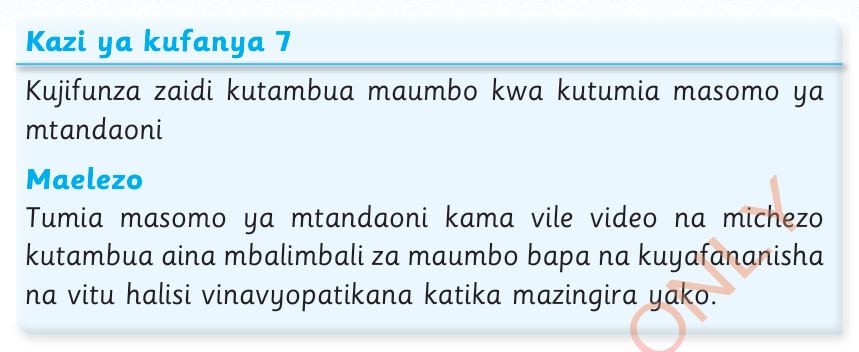
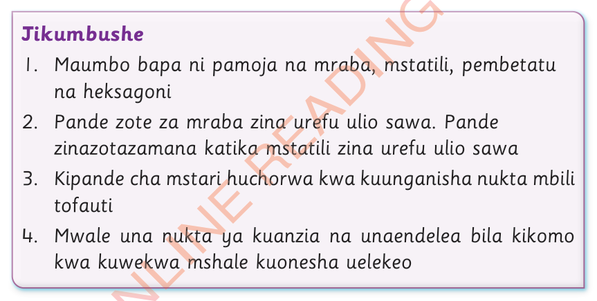
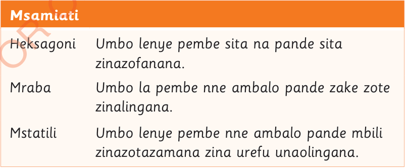

Kazi ya kufanya 7
Kujifunza zaidi kutambua maumbo kwa kutumia masomo ya mtandaoni
Maelezo
Tumia masomo ya mtandaoni kama vile video na michezo kutambua aina mbalimbali za maumbo bapa na kuyafananisha na vitu halisi vinavyopatikana katika mazingira yako.

Jikumbushe
1.Maumbo bapa ni pamoja na mraba, mstatili, pembetatu na heksagoni
2.Pande zote za mraba zina urefu ulio sawa.Pande zinazotazamana katika mstatili zina urefu ulio sawa
3.Kipande cha mstari huchorwa kwa kuunganisha nukta mbili tofauti
4.Mwale una nukta ya kuanzia na unaendelea bila kikomo kwa kuwekewa mshale kuonesha uelekeo

Msamiati
HeksagoniUmbo lenye pembe sita na pande sita zinazofanana.
MrabaUmbo la pembe nne ambalo pande zake zote zinalingana.
MstatiliUmbo lenye pembe nne ambalo pande mbili zinazotazamana zina urefu unaolingana.